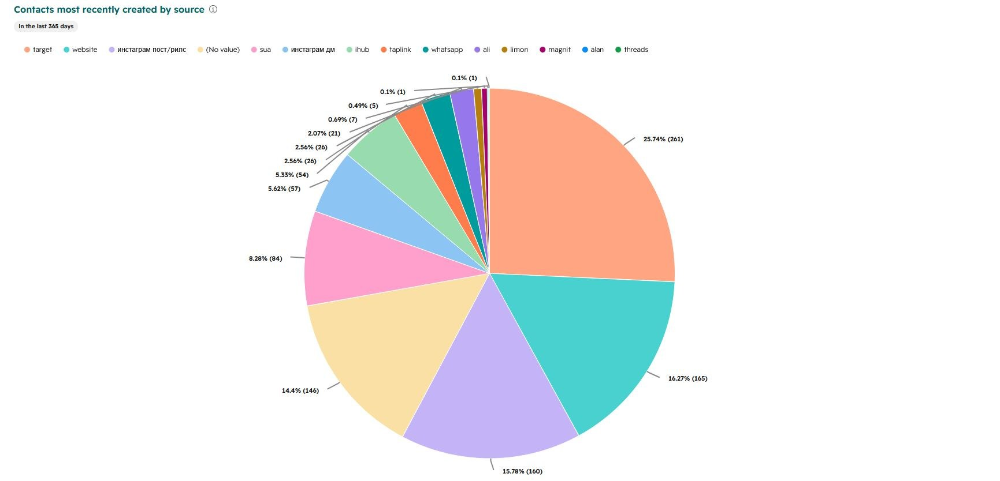
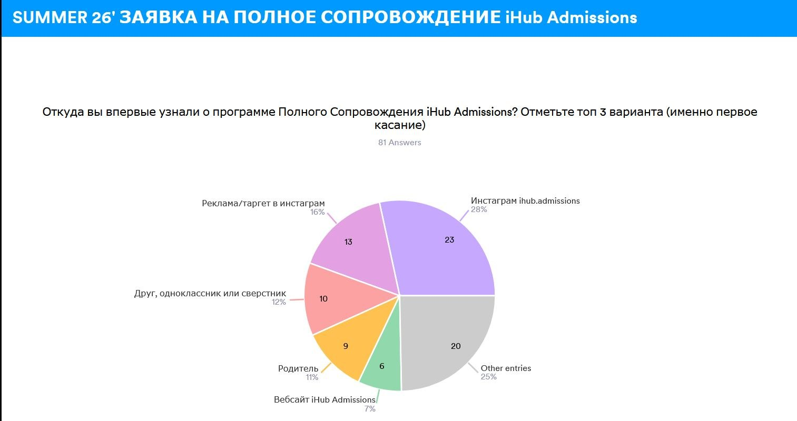
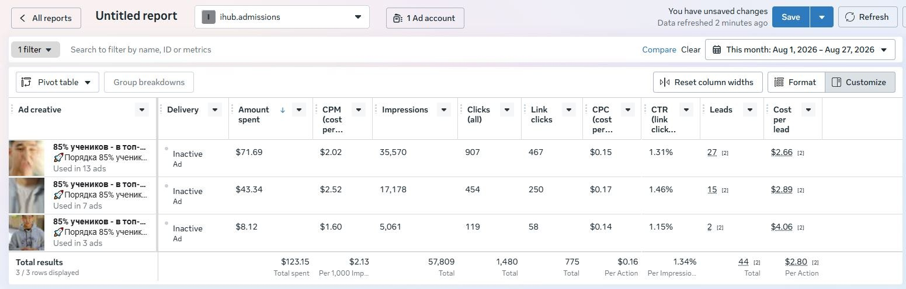

Выводы
Что работает, что нет, куда фокусироваться, что делегировать и на какие грабли не наступать.
7.1
Каналы: что приносит лиды и что приносит заявки
Два разных среза за разные периоды. Первый — все контакты, попавшие в CRM за год. Второй — ответы тех, кто дошёл до анкеты на полное сопровождение. Они не совпадают, и в этом расхождении весь смысл секции.
Источники контактов в CRM · последние 365 дней
Первое касание по анкетам набора Summer 26
Что из этого следует
- SMM и таргет вместе — это почти половина всего потока. Таргет, посты с рилсами и директ дают 478 контактов из 1014. Всё остальное вместе взятое меньше.
- Но в анкетах органика обгоняет рекламу. Инстаграм-аккаунт — 28% первых касаний, реклама и таргет — 16%. Таргет набирает объём, аккаунт приводит тех, кто доходит до заявки на полное сопровождение. Ровно тот случай, ради которого строится сквозная аналитика: канал с самым дешёвым лидом и канал с договором — не один и тот же канал.
- 146 контактов пришли без метки. Это четвёртый по величине «источник» и 14% базы. Пока дыра не закрыта, любое сравнение каналов между собой идёт с погрешностью в те же 14%.
- Медийная статья дала охват и почти ноль заявок. Лимон — 7 контактов за год при большом охвате. Такие размещения имеет смысл брать под узнаваемость и не закладывать в план по лидам.
- Сарафан — третья сила. Друг, одноклассник и родитель вместе дают 23% первых касаний. Маркетинг им напрямую не управляет, но влияет на него тем, насколько заметны результаты студентов.
- Аудиторию мастер-класса собирали таргетом и рассылками по молодёжи — и пришли в основном школьники, без родителей. Если нужен родитель в зале, канал набора должен быть другим.


7.2
Креативы для таргета
Один месседж про 85% учеников в топ-вузах, три варианта подачи. Разброс по цене лида — в полтора раза, при том что текст один и тот же.
| Вариант | Потрачено | Показы | CTR | CPC | Лиды | Цена лида |
|---|---|---|---|---|---|---|
| Вариант 1 · в 13 объявлениях | $71,69 | 35 570 | 1,31% | $0,15 | 27 | $2,66 |
| Вариант 2 · в 7 объявлениях | $43,34 | 17 178 | 1,46% | $0,17 | 15 | $2,89 |
| Вариант 3 · в 3 объявлениях | $8,12 | 5 061 | 1,15% | $0,14 | 2 | $4,06 |
| Итого | $123,15 | 57 809 | 1,34% | $0,16 | 44 | $2,80 |
Данные за 1–27 августа 2026 из отчёта по креативам в Meta Ads. Считается по креативу, а не по кампании: один и тот же ролик работает сразу в нескольких объявлениях.
Правило подбора лица
- Алихан и студенты — под 18–25. В этой возрастной группе они собирают лиды дешевле остальных.
- Азим — под 35+. Родительская аудитория реагирует на него лучше и тоже дешевле.
- Лицо подбирается под аудиторию, а не наоборот. Решение о покупке принимают двое: инициирует подросток, платит родитель. Смешивать оба лица в одной кампании — значит платить за обе аудитории и не попасть точно ни в одну.
- $2,80 — цена лида, а не договора. Соотнести её с реальной стоимостью привлечения клиента получится только после запуска сквозной аналитики.

7.3
Работа с командой
Главный источник конфликтов за всё время — съёмки. И почти всегда по одной и той же причине.
Где ломалось чаще всего
ТЗ по съёмкам не готовилось заранее. Из-за этого спор о том, как снимать, начинался прямо на площадке, а не до неё. К этому добавлялись опоздания и переносы — и день съёмок уходил в никуда вместе с контент-планом на неделю. Шаблон ТЗ существует и лежит в секции 04; проблема была не в его отсутствии, а в том, что он заполнялся в последний момент.
Оператор должен приходить с пониманием, что снимаем и как. Всё, что обсуждается на площадке, — это потерянный съёмочный день.
Дедлайны контролируются, но давление без обратной связи не работает. Требовать и объяснять — в одном разговоре.
Не только давать оценку, но и собирать её с команды. Пятничная встреча один на один из секции 05 для этого и существует.
7.4
Что делать самому, а что делегировать
Если CMO занят исполнительскими задачами и рутиной, масштабирования не будет — вся мощность уходит в текучку. Работающая схема простая и повторяемая.
Новый инструмент, канал, гео или продукт CMO разбирает сам, руками.
Довести до состояния, когда есть понятный повторяемый процесс.
Передать сотруднику вместе с регламентом и метрикой, по которой это меряется.
Освободившееся время уходит на следующее направление. Так отдел растёт вширь.
Остаётся за CMO
То, что нельзя делегировать, не потеряв рост
- Разведка
- Новые инструменты, каналы, гео, продукты — до того, как это станет процессом
- Продукты
- Участие в создании новых продуктов и услуг вместе с академическим отделом
- Идеи кампаний
- Креативные рекламные кампании: сама идея, а не её производство
- Рынки
- Выход в новые страны и регионы
- Контроль
- Дедлайны, обратная связь, KPI команды
Уходит команде
Всё, что уже стало повторяемым процессом
- Реклама
- Ведение кампаний по отлаженной структуре
- Производство
- Съёмки, монтаж, публикации, оформление
- Каналы
- Ведение аккаунтов, рассылки, ответы в директе
- Отчётность
- Сбор регулярных цифр по готовым шаблонам
7.5
Куда расти
Четыре направления, за счёт которых iHub может усилить своё положение. Ни одно из них не про то, чтобы лучше вести текущую рекламу.
На что делать фокус
- Новые продукты и услуги. Digital TopEssay показал, что продукт без участия менеджера снимает потолок продаж. Следующий такой продукт — задача маркетинга не меньше, чем академического отдела.
- Креативные кампании. Самый недоиспользованный актив — личность Азима: первый кыргызстанец с дипломом Columbia. Ни у одного конкурента этого нет.
- Новые рынки. Казахстан и Узбекистан уже в географии, но маркетинг там работает по остаточному принципу. Отдельная кампания под КЗ — ближайшая точка роста.
- Новые инструменты. Каждый освоенный и переданный команде инструмент освобождает время CMO на следующий. Это и есть механика масштабирования.
Дальше — твой маркетинг. Если по этому документу что-то осталось непонятным, спрашивай, пока я на связи: до какого числа доступен.